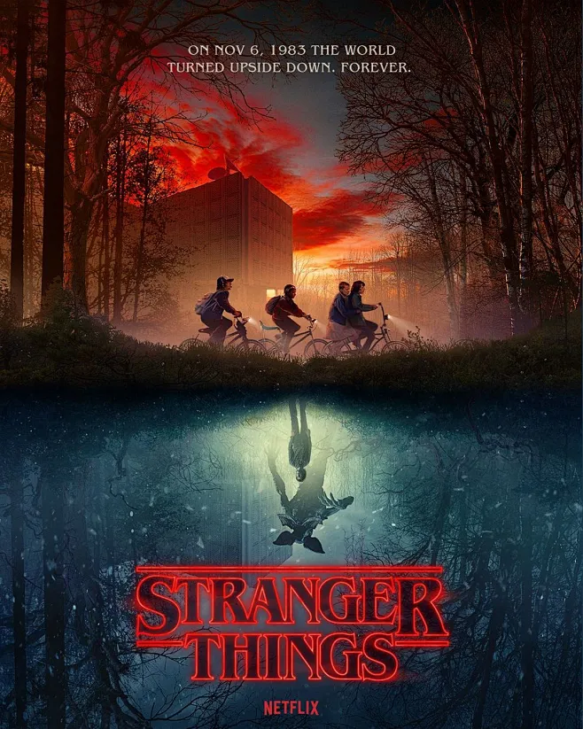

《怪奇物语》（Stranger Things）是由美国网飞（Netflix）出品的科幻恐怖剧情类电视剧，由马特·杜菲、罗斯·杜菲兄弟执导，薇诺娜·瑞德、大卫·哈伯、菲恩·伍法德、米莉·波比·布朗等人主演。
该剧以1980年代的美国印第安纳州霍金斯小镇为背景，讲述了小镇上发生的一系列离奇超自然事件：一个男孩神秘失踪，他的朋友、家人以及当地警察开始寻找真相，过程中发现了隐藏在小镇背后的秘密实验室、颠倒世界以及拥有超能力的女孩“十一”，众人在冒险中互相扶持，对抗未知的超自然力量。
该剧自2016年首播以来，凭借浓郁的80年代复古情怀、紧凑的剧情、鲜明的角色塑造以及对经典科幻作品的致敬，收获了全球观众的喜爱和极高的口碑，多次获得艾美奖、金球奖等重要奖项提名与获奖。
剧中的角色、台词以及复古风格也成为流行文化的一部分，荧光绿的视觉元素、复古穿搭、经典台词被无数粉丝模仿和致敬。